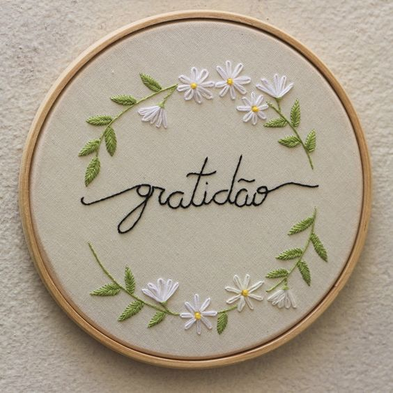
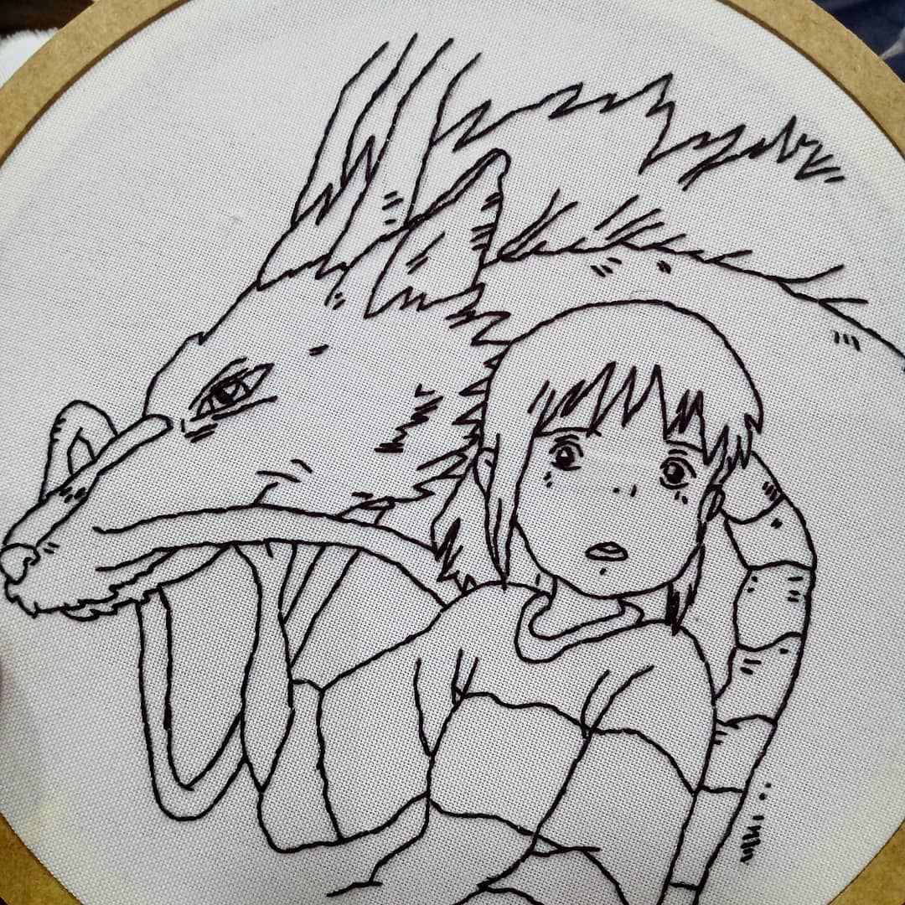
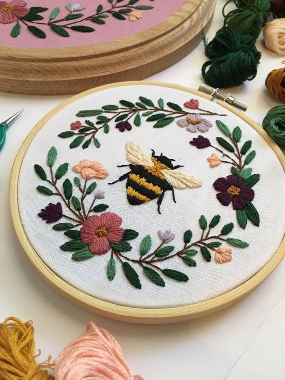

Controle de Estoque
| Foto | Descrição | Preço (R$) | Quantidade disponível |
|---|---|---|---|
|  | Bordado Simples em bastidor, com no máximo 5 cores. | 50,00 | 2 |
|  | Bordado Simples em bastidor, sem limite de cor. | 80,00 | 1 |

|
Bordado detalhado em bastidor, com no máximo 3 cores. | 100,00 | 3 |
|  | Bordado detalhado com no máximo 8 cores | 150,00 | 4 |

|
Bordado detalhado em bastidor, sem limite de cores. | 185,00 | 1 |